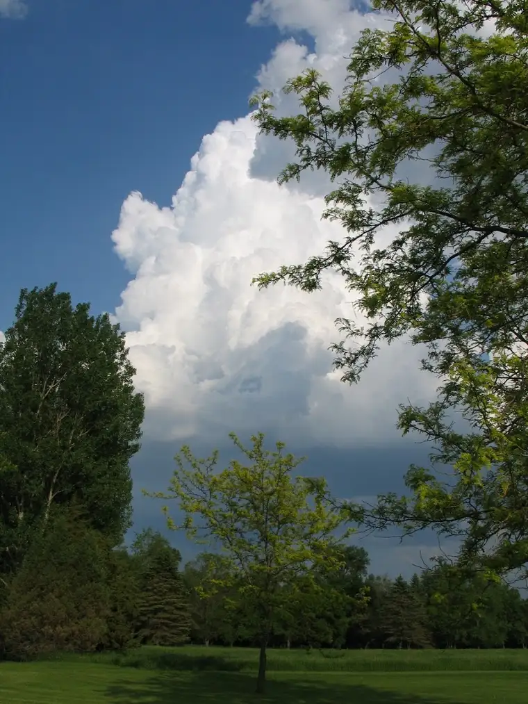
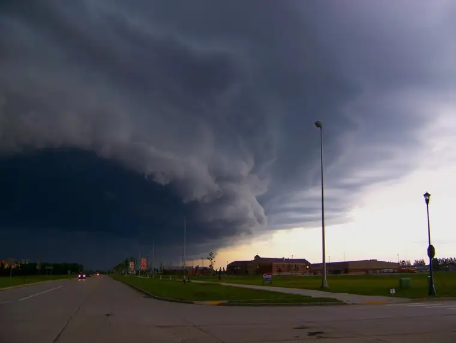
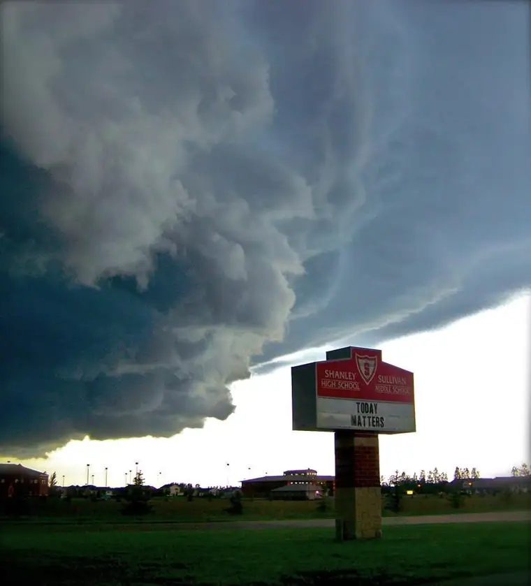

I’ve got a fixation that I’m having a hard time shaking. When it takes hold — and it often does while the five kids and I are cruising along in the minivan — everyone knows what’s coming. The teens roll their eyes. The young ones sigh. They’ve given up on convincing me this obsession is unworthy. So they simply exchange knowing glances and turn up the radio while I indulge.
“Look at that one!” I’ll say. “That’s incredible!”
Yeah, Mom, whatever.
I’m obsessed with clouds. I’m absolutely in love with the sky paintings I see on a regular basis here on the prairie. And I’ve come to realize, in part through my friends who live in other places, that there’s something to this; that living in “God’s country,” the land of the Big Sky, well, it’s not like this everywhere.
| Badlands/Medora, North Dakota (Emily Brooks) |
{kind=link}
Case in point, the above photo was supplied by Emily Brooks, a friend who shares a passion with sky shots. This one was taken in Western North Dakota near Medora in the “Badlands.” It doesn’t get much more divine than when untouched terrain meets the heavens. Add the perfect time of day when sun provides natural fill light, creating mesmerizing shadows, and you’ve got something; something worth capturing. Because the sun at the right time and place is fleeting.
I’ve been collecting these images over the past months and I can no longer keep them to myself. Since I don’t have a completely receptive audience here at home, I’m hoping you’ll oblige me.
| “One Summer Evening at Dusk,” Fargo, North Dakota (Roxane B. Salonen) |
{kind=link}
Mind you, I’m not a professional photographer –though I consider myself a devoted amateur — and I don’t always have my Canon nearby when the moment strikes. Some of these were snapped with my cell phone. Not brilliant photography, though a brilliant canvas. But even in the best of these, a true echo of reality isn’t possible through the camera lens, though I might die trying.
| “Luminous Cloud in a Dakota Sky,” Fargo, North Dakota (Roxane B. Salonen) |
{kind=link}
Sometimes, the sun acts as a spotlight, zeroing in on one particular cloud that’s been touched pink by its descending rays, bringing it to the fore as the rest of the scene fades to gray.
{kind=link}
 |
| “Tug of War Weather,” Carmel of Mary Monastery, Wahpeton, North Dakota (Roxane B. Salonen) |
{kind=link}
Other times it seems as though there’s a Weather Tug of War going on in the sky. Which will win — the gray or the white?
Cotton candy puffs are some of my favorites. I look at them and inhale their fluffy lovely.
{kind=link}
{kind=link}
But even the ominous ones have their place. They remind me of the might of nature.
 |
| “Chasing a Storm Chasing the Earth,” Fargo, North Dakota (Rebecca Raber) |
{kind=link}
 |
| “Today Matters,” Fargo, North Dakota (Rebecca Raber) |
{kind=link}
The above two were taken by our school’s choir teacher. She’s another who’s been captivated by the prairie sky. Note the sign on the school marquee, as well as the powerfully distinct cloud edges. (Yes, the small things make me giddy!)
| “Poolside,” Island Park, Fargo, North Dakota (Roxane B. Salonen) |
{kind=link}
| From the Shores of Lake Lizzie, Minnesota (Emily Brooks) |
{kind=link}
Summertime clouds can be particularly charming, inducing the viewer into a warm-weather coma.
And airplane clouds never fail to enrapture through their humility-prompting perspective.
{kind=link}
{kind=link}
| “Sky Vistas” (Roxane B. Salonen) |
{kind=link}
{kind=link}